⚡ EMT: The Journey of Electromagnetic Waves
"We're not going to memorise transmission lines. We're going to understand why engineers had to invent the entire theory in the first place."
Imagine we're inside a transmitter station. A signal has been generated. Somewhere far away, an antenna is waiting to receive it. Between them is a cable. How does electrical energy actually travel from the transmitter to the antenna? And why does a simple wire suddenly become a complicated electromagnetic system? Let's find out.
The Day an Ordinary Wire Stopped Being Ordinary
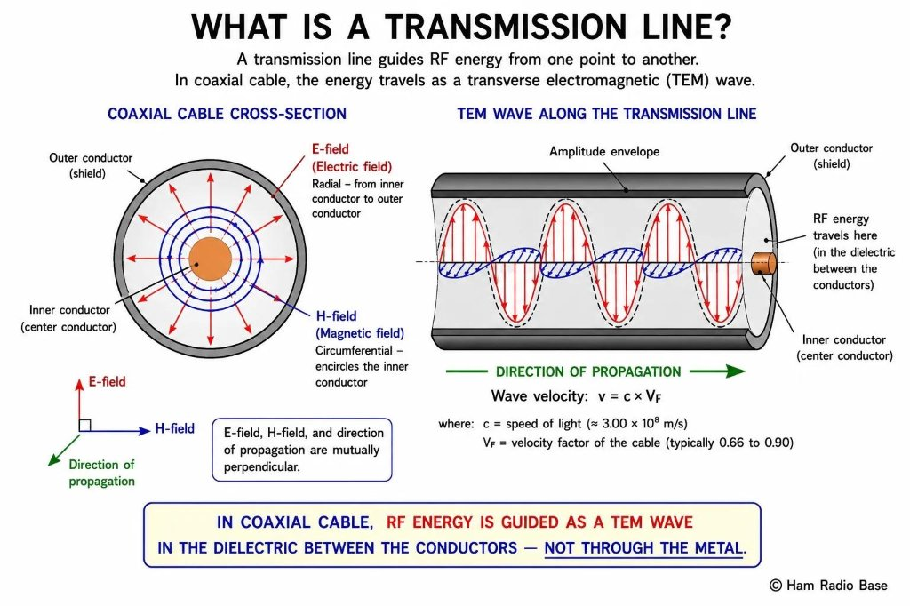
Scene 1: We have a transmitter and a cable.
Imagine connecting a battery to a small circuit using short wires. You switch it ON. The circuit responds almost instantaneously.
You don't normally worry about how long the wire is or how much time the electrical disturbance takes to reach the other end. Why?
Because the wire is extremely short compared with the wavelength of the electrical signal. For this situation, we can approximately treat the voltage and current as if they exist throughout the circuit at the exact same instant.
This is the comfortable world of ordinary circuit theory:
- Resistance ($R$)
- Inductance ($L$)
- Capacitance ($C$)
- Kirchhoff's Voltage Law (KVL)
- Kirchhoff's Current Law (KCL)
Scene 2: We increase the frequency.
Suppose our transmitter is no longer operating at a low frequency. We're now transmitting a high-frequency RF signal. Something fundamental changes.
An electrical signal doesn't reach the other end instantaneously. Its electromagnetic disturbance propagates through the structure at a finite velocity $v = c \times V_F$. Consequently, the signal at one end and the signal at another end can have different phases at the same instant.
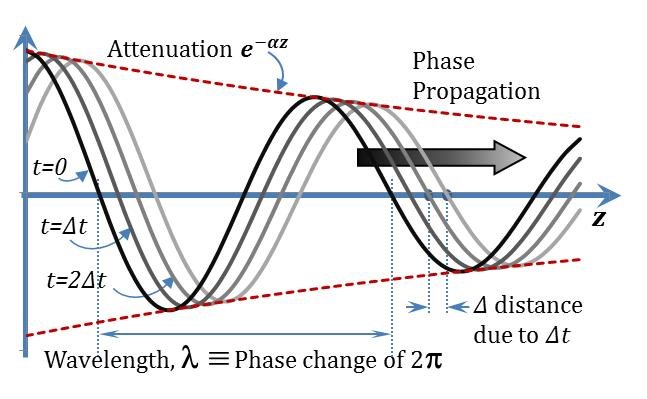
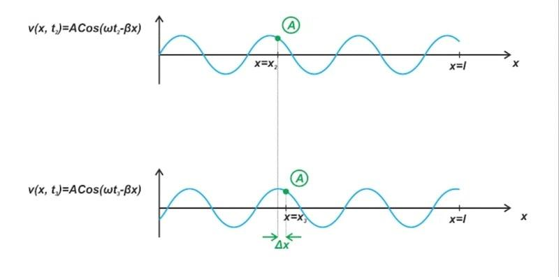
Think about what that means:
- At position A, the voltage might be at its positive peak ($+V_0$).
- At position B, the voltage might already have started decreasing ($0\text{ V}$).
- At position C, the signal might be approaching its negative peak ($-V_0$).
The wire is no longer electrically uniform along its length. This is the moment ordinary circuit analysis becomes insufficient. As documented in our foundational guides transmission_lines_master_guide.html and sadiku_chapter11_transmission_lines_smith_chart_master.html: at high frequencies, voltage and current vary in magnitude and phase along the line, and electromagnetic wave analysis becomes mandatory.
Scene 3: Why does frequency cause this?
We need two central characters in our story:
- Frequency ($f$): How many complete oscillations occur per second ($\text{Hz}$ or $\text{s}^{-1}$).
- Wavelength ($\lambda$): The physical distance covered by one complete cycle of the wave in space ($\text{meters}$).
Higher frequency means shorter wavelength. And shorter wavelength means a physically ordinary cable can occupy a significant portion of one wavelength!
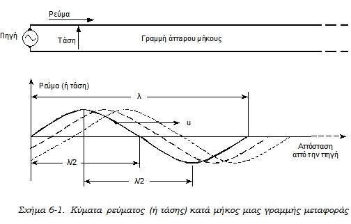
* $\ell = \text{physical length of the transmission line}$. The $\ell \ge \lambda/20$ criterion is the universal engineering boundary established across all PCCECE501 modules.
Scene 4: Two Operating Regimes Matrix
Comparing the two fundamental domains of electrical engineering:
| Property | Low Frequency (Lumped Circuit Regime) | High Frequency (Distributed Wave Regime) |
|---|---|---|
| Typical Frequency | Below $100\text{ kHz}$ | Above $100\text{ MHz}$ (up to microwaves/mmWaves) |
| Typical Wavelength ($\lambda$) | Above $3\text{ km}$ | Below $3\text{ m}$ (down to millimeters) |
| Physical Line Length vs $\lambda$ | $$\ell \ll \lambda \quad (\ell < \lambda/20)$$ | $$\ell \ge \lambda/20 \quad (\text{Comparable to or }> \lambda)$$ |
| Propagation Delay | Negligible approximation ($t_{\text{delay}} \approx 0$) | Decisive ($t_{\text{delay}} = \ell / v$ causes phase rotation) |
| Voltage & Current | Approximately uniform along the wire at any instant | Vary dramatically in magnitude and phase with position $z$ |
| Governing Analysis | Lumped circuit theory (KVL, KCL, discrete $R, L, C$) | Distributed wave theory (Telegrapher's PDEs, wave solutions) |
Scene 5: So what exactly is a transmission line?
Now we can finally appreciate the rigorous formal definition:
"A transmission line is a guided electromagnetic structure designed to carry electromagnetic energy from a source to a load with minimum attenuation."
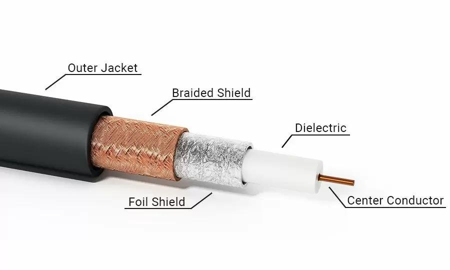
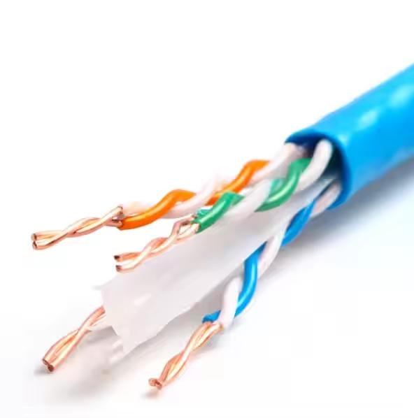
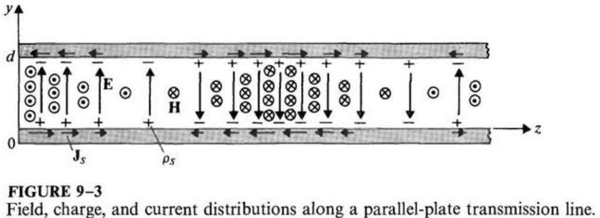
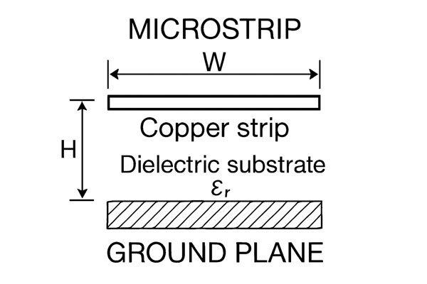
Why Is This Important Across Engineering?
Because these structures form the nervous system of modern technological civilization:
- RF & Microwave Engineering: Antenna feeds, impedance-matching networks, power splitters, and directional couplers.
- Telecommunications: Multi-gigabit coaxial backbones, Cat6A Ethernet, and transoceanic subsea fiber/copper repeaters.
- Power Systems: High-voltage AC (HVAC) grid stability and long-distance Ultra-High-Voltage DC (UHVDC) interconnects.
- Medical & Scientific Instrumentation: High-power RF feedlines in Magnetic Resonance Imaging (MRI) gradient coils and CERN particle accelerators.
The Cable Has a Hidden Internal Architecture
Scene 1: Imagine We Could Cut the Cable into Infinitely Tiny Pieces
We already know that at RF frequencies, voltage and current vary along the length of the cable. Now an engineer asks a profound structural question: Can we describe what happens inside every tiny portion of this cable?
Instead of trying to analyse the entire cable as one massive black box, let us isolate an infinitesimal segment of physical length \(\Delta z\). It might be a centimetre, a millimetre, or a microscopic fraction of a millimetre. We do not care about its absolute length yet; we want to uncover what electricity experiences as it travels through this tiny segment. Four fundamental physical effects appear simultaneously:
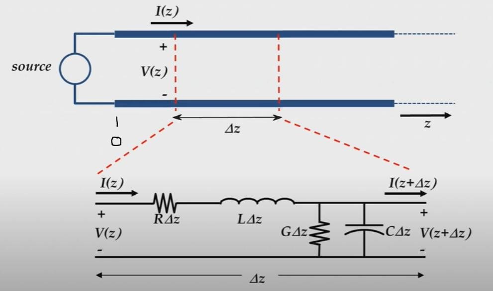
1. Resistance (\(R\))
The metallic conductors are not perfect superconductors. Moving charges collide with the crystal lattice, dissipating RF energy as ohmic Joule heat.
2. Inductance (\(L\))
Current flowing through the conductors creates a magnetic field circulating around the wire. When current changes, this magnetic flux linkage induces a back-EMF opposing the change.
3. Capacitance (\(C\))
Two separated metallic conductors holding opposite charges create an electrostatic field across the dielectric. Energy is stored directly in this transverse electric field.
4. Conductance (\(G\))
Real dielectric insulators have a small but finite conductivity (\(\sigma \ne 0\)). A tiny transverse leakage conduction current crosses the insulating medium between the conductors.
Scene 2: Why Are \(R\) and \(L\) Placed in Series?
Imagine current travelling along a copper conductor. As charges drift forward along the longitudinal \(z\)-axis, they encounter two continuous series phenomena:
- Resistance (\(R\)): The conductor is imperfect. Charges moving along the wire encounter resistance, dissipating electrical energy directly into thermal energy along the longitudinal direction.
- Inductance (\(L\)): The moving charges create magnetic flux looping the wire. Any time variation in current (\(\partial I / \partial t\)) induces a counter-electromotive force along that exact same conduction path.
Scene 3: Why Are \(C\) and \(G\) Placed in Parallel (Shunt)?
Now shift your perspective from looking along the wire to looking between the two conductors across the insulating dielectric.
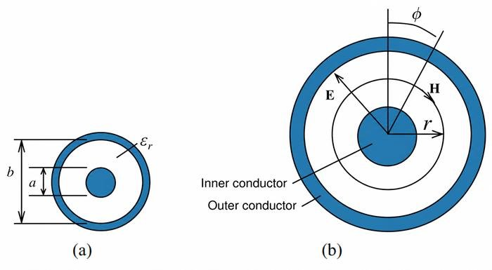
The insulating dielectric separating the conductors is subjected to the instantaneous voltage \(V(z,t)\):
- Capacitance (\(C\)): The electric field lines span radially from the inner conductor to the outer shield. Whenever the voltage changes in time, displacement current flows across the dielectric gap to charge or discharge this electric field.
- Conductance (\(G\)): Real dielectric materials have a small bulk conductivity \(\sigma\). A minute conduction leakage current bridges the gap between the conductors without travelling down the wire.
Scene 4: Why Does Your Professor Write \(R\Delta z\) Instead of Just \(R\)?
In standard lumped circuit analysis, a resistor is a discrete component stamped with a fixed value like \(100\,\Omega\). But a transmission line does not have discrete resistors soldered every few inches. Its resistance, inductance, capacitance, and conductance exist continuously and uniformly across its entire physical span!
Engineers therefore define distributed parameters per unit length:
| Parameter | Physical Meaning | SI Unit | Infinitesimal Segment Value (\(\Delta z\)) |
|---|---|---|---|
| \(R\) | Series loop resistance per unit length | \(\Omega/\text{m}\) | \(R_{\text{piece}} = R\Delta z\) |
| \(L\) | Series loop inductance per unit length | \(\text{H}/\text{m}\) | \(L_{\text{piece}} = L\Delta z\) |
| \(G\) | Shunt dielectric leakage conductance per unit length | \(\text{S}/\text{m}\) | \(G_{\text{piece}} = G\Delta z\) |
| \(C\) | Shunt dielectric capacitance per unit length | \(\text{F}/\text{m}\) | \(C_{\text{piece}} = C\Delta z\) |
Concrete Example: If a cable has \(R = 10\,\Omega/\text{m}\) and we inspect a tiny slice of \(\Delta z = 0.1\,\text{m}\), then \(R_{\text{piece}} = 10 \times 0.1 = 1\,\Omega\). As \(\Delta z \to 0\), the individual component values shrink toward zero, but their ratios and spatial derivatives remain finite and exact!
Scene 5: The Most Important Consequence • \(V(z,t)\) and \(I(z,t)\)
In introductory circuit theory, voltage is simply \(V(t)\). In a transmission line, it is written as:
Why two variables?
- \(z\) represents position along the cable axis.
- \(t\) represents time.
At any given frozen instant in time \(t_0\), the voltage at the transmitter (\(z = 0\)) is different in amplitude and phase from the voltage near the antenna (\(z = \ell\)). And as time flows, both values oscillate.
Two Laws That Reveal a Travelling Wave
We have our four distributed parameters: \(R, L, G, C\). But simply naming components is not enough. We must answer two decisive questions:
Two familiar laws from introductory physics answer these questions with mathematical perfection: Kirchhoff's Voltage Law (KVL) and Kirchhoff's Current Law (KCL) applied to our infinitesimal cell \(\Delta z\).
Scene 1: First, Follow the Voltage (KVL)
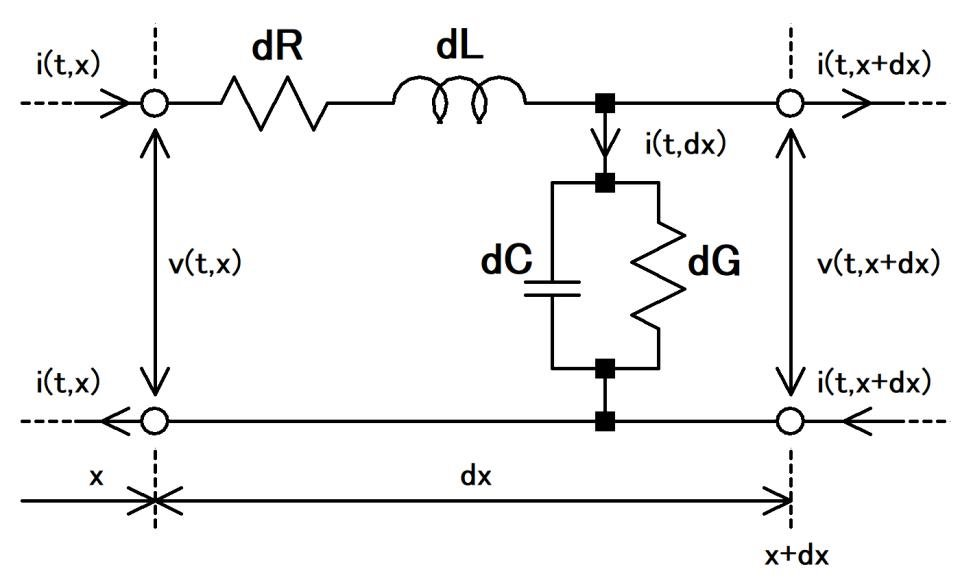
Consider the infinitesimal segment between position \(z\) and \(z+\Delta z\):
- Entering voltage at left boundary: \(V(z,t)\)
- Leaving voltage at right boundary: \(V(z+\Delta z, t)\)
Should these two voltages be identical? No! As current flows through the segment, two series drops occur:
- Ohmic Drop: Across the series resistance \(R\Delta z\): \[ V_R = (R\Delta z)\,I(z,t) \]
- Inductive Back-EMF: Across the series inductance \(L\Delta z\) due to time-varying magnetic flux: \[ V_L = (L\Delta z)\,\frac{\partial I(z,t)}{\partial t} \]
Summing potential changes across the closed loop according to Kirchhoff's Voltage Law (KVL):
Physical translation: Entering Voltage = Ohmic Drop + Inductive Drop + Leaving Voltage.
Scene 2: Why the Equation Suddenly Contains a Derivative
Rearrange the KVL balance by moving the exit voltage to the left-hand side:
Now divide every term by \(\Delta z\):
Now let the length of our segment shrink to zero: \(\Delta z \to 0\). By the foundational definition of a spatial derivative: \[ \lim_{\Delta z \to 0} \frac{V(z+\Delta z,t) - V(z,t)}{\Delta z} = \frac{\partial V(z,t)}{\partial z} \]
Physical Meaning: The spatial rate of voltage drop along the line is directly driven by the conductor resistance \(R\) and time-varying inductance \(L\).
Scene 3: Now Follow the Current (KCL)
We have understood why voltage drops. But what happens to the current? Does all the current that enters the left terminal at \(z\) leave the right terminal at \(z+\Delta z\)?
No! Because the conductors are separated by a dielectric medium, some current branches off transversely into the shunt admittance:
- Leakage Current through \(G\): Due to finite dielectric conductivity \(\sigma\): \[ I_G = (G\Delta z)\,V(z+\Delta z,t) \]
- Displacement Charging Current through \(C\): Due to time-varying electric flux between the plates: \[ I_C = (C\Delta z)\,\frac{\partial V(z+\Delta z,t)}{\partial t} \]
Applying Kirchhoff's Current Law (KCL) at the upper node:
Rearranging and dividing by \(\Delta z\):
Taking the limit as \(\Delta z \to 0\):
Physical Meaning: The spatial rate of current loss along the line is governed by dielectric leakage \(G\) and capacitive charging displacement current \(C\).
Scene 4: The Coupled Telegrapher Equations
Observe the magnificent symmetry of the two equations governing every transmission line:
Governed by conductor loop impedance \(R + \partial/\partial t L\).
Governed by dielectric shunt admittance \(G + \partial/\partial t C\).
Scene 5: Dimensional Sanity Check
Every rigorous engineer verifies units. Let us inspect the dimensional consistency of both equations:
Equation 1 (Voltage Rate):
\[ [RI] = \left(\frac{\Omega}{\text{m}}\right) \times \text{A} = \frac{\text{V}}{\text{m}} \] \[ \left[L\frac{\partial I}{\partial t}\right] = \left(\frac{\text{H}}{\text{m}}\right) \times \left(\frac{\text{A}}{\text{s}}\right) = \left(\frac{\text{V}\cdot\text{s}/\text{A}}{\text{m}}\right) \times \left(\frac{\text{A}}{\text{s}}\right) = \frac{\text{V}}{\text{m}} \]Equation 2 (Current Rate):
\[ [GV] = \left(\frac{\text{S}}{\text{m}}\right) \times \text{V} = \frac{\text{A}}{\text{m}} \] \[ \left[C\frac{\partial V}{\partial t}\right] = \left(\frac{\text{F}}{\text{m}}\right) \times \left(\frac{\text{V}}{\text{s}}\right) = \left(\frac{\text{A}\cdot\text{s}/\text{V}}{\text{m}}\right) \times \left(\frac{\text{V}}{\text{s}}\right) = \frac{\text{A}}{\text{m}} \]Making Time Disappear from Our Equations
Scene 1: A New Mathematical Inconvenience
We have the time-domain Telegrapher equations: \[ -\frac{\partial V}{\partial z} = R\,I + L\,\frac{\partial I}{\partial t} \qquad -\frac{\partial I}{\partial z} = G\,V + C\,\frac{\partial V}{\partial t} \] Imagine having to solve these coupled partial differential equations for high-frequency sinusoidal signals. We would be burdened with carrying trigonometric sine and cosine functions, product rules, and phase lags through pages of tedious calculus.
Can we make the time variable disappear entirely? Yes! By using Phasors.
Scene 2: Imagine Every Point on the Cable Follows the Same Clock
Our transmitter operates at a steady angular frequency \(\omega = 2\pi f\). Under sinusoidal steady-state excitation, every single point on the cable oscillates at that exact same frequency \(\omega\). While the magnitude and phase vary with \(z\), time evolution everywhere follows the common factor \(e^{j\omega t}\).
Scene 3: The Magical Replacement: \(\partial/\partial t \longrightarrow j\omega\)
Watch what happens when we differentiate the phasor expression with respect to time: \[ \frac{\partial}{\partial t}\left[ V_s(z)\,e^{j\omega t} \right] = V_s(z)\,\frac{\partial}{\partial t}\left( e^{j\omega t} \right) = j\omega\,V_s(z)\,e^{j\omega t} \]
Scene 4: Transforming the Telegrapher Equations
Apply this transformation directly to our two time-domain equations:
Where \(Z = R + j\omega L\) is the series loop impedance per metre.
Where \(Y = G + j\omega C\) is the shunt admittance per metre.
Scene 5: The Grand Discovery • Uncoupling to the Wave Equation
We want a single equation for voltage alone. Differentiate the first phasor equation with respect to \(z\): \[ -\frac{d^2V_s}{dz^2} = (R + j\omega L)\,\frac{dI_s}{dz} \]
Now substitute the second phasor equation \(\frac{dI_s}{dz} = -(G + j\omega C)V_s\): \[ -\frac{d^2V_s}{dz^2} = (R + j\omega L)\left[ -(G + j\omega C)\,V_s \right] \]
The negative signs cancel cleanly on both sides: \[ \frac{d^2V_s}{dz^2} = (R + j\omega L)(G + j\omega C)\,V_s \]
Through the exact same differentiation on current, we obtain the identical wave equation for current: \[ \boxed{ \frac{d^2I_s}{dz^2} - \gamma^2 I_s = 0 } \]
Scene 6: Meet the Propagation Constant \(\gamma = \alpha + j\beta\)
The complex propagation constant \(\gamma\) split into its real and imaginary parts reveals the dual nature of travelling wave physics:
\(\alpha\)
Dictates exponential decay of signal amplitude as the wave propagates through dissipative media: \(e^{-\alpha z}\). In a lossless line (\(R=0, G=0\)), \(\alpha = 0\).
\(\beta\)
Dictates the spatial phase rotation accumulated per metre: \(\beta = 2\pi / \lambda = \omega / v_p\). It determines wavelength and phase velocity!
The Cable Has Two Travellers
Scene 1: We Have Discovered a Wave Equation. Now What?
In Chapter 4, we uncoupled the Telegrapher equations and obtained the Helmholtz wave equation for voltage: \[ \frac{d^2V_s}{dz^2} - \gamma^2 V_s = 0 \qquad \text{where } \gamma = \alpha + j\beta \]
Now an engineer asks a decisive physical question: What exact voltage and current distributions along the transmission line satisfy this differential equation? Let us solve it.
Scene 2: Imagine the Solution Is Exponential
For a linear, homogeneous, second-order ordinary differential equation with constant coefficients, we try an exponential trial function: \[ V_s(z) = A e^{mz} \]
Why exponential? Because differentiating an exponential reproduces the exact same function, merely scaled by the constant $m$: \[ \frac{dV_s}{dz} = m A e^{mz} \qquad \frac{d^2V_s}{dz^2} = m^2 A e^{mz} \]
Substituting back into our Helmholtz equation: \[ m^2 A e^{mz} - \gamma^2 A e^{mz} = 0 \implies (m^2 - \gamma^2) A e^{mz} = 0 \] Because $A e^{mz} \ne 0$ for a non-trivial wave, we obtain the characteristic algebraic equation: \[ m^2 = \gamma^2 \implies \boxed{ m = +\gamma \quad \text{and} \quad m = -\gamma } \]
Scene 3: Meet the Two Travellers
→ \(+z\) Direction • \(e^{-\gamma z}\)
The Incident Wave. Launched directly by the transmitter/source, travelling down the cable toward the receiving load. Its phase retards as $z$ increases: $(\omega t - \beta z)$.
← \(-z\) Direction • \(e^{+\gamma z}\)
The Reflected Wave. Created whenever the load impedance fails to absorb $100\%$ of the incoming wave energy, reflecting back toward the generator. Its phase advances: $(\omega t + \beta z)$.
Why do we need both? Because a transmission line is an open physical highway capable of guiding energy simultaneously in either direction!
Scene 4: The General Wave Equations from Your Curriculum
The general phasor voltage and current solutions along any transmission line are:
| Symbol | Physical Meaning | Wave Role |
|---|---|---|
| \(V_0^+\) | Forward voltage wave complex amplitude at $z = 0$ | Incident wave launched by generator |
| \(V_0^-\) | Backward voltage wave complex amplitude at $z = 0$ | Reflected wave bouncing from load mismatch |
| \(I_0^+\) | Forward current wave complex amplitude at $z = 0$ | Current associated with forward power flow |
| \(I_0^-\) | Backward current wave complex amplitude at $z = 0$ | Current associated with reverse reflected power |
| \(e^{-\gamma z}\) | Spatial forward wave factor: $e^{-\alpha z} e^{-j\beta z}$ | Decays and phase-retards toward $+z$ |
| \(e^{+\gamma z}\) | Spatial backward wave factor: $e^{+\alpha z} e^{+j\beta z}$ | Decays and phase-retards toward $-z$ |
Scene 5: Why \(\alpha\) Controls Signal Loss and \(\beta\) Controls Phase
Substitute $\gamma = \alpha + j\beta$ into the forward wave term and multiply by the time factor $e^{j\omega t}$: \[ V^+(z,t) = \operatorname{Re}\left[ V_0^+ e^{-(\alpha + j\beta)z} e^{j\omega t} \right] = \operatorname{Re}\left[ V_0^+ e^{-\alpha z} e^{j(\omega t - \beta z)} \right] \]
Envelope Factor: \(e^{-\alpha z}\)
Exponential amplitude decay envelope. As the wave travels forward in $+z$, ohmic and dielectric dissipations attenuate the peak amplitude by $e^{-\alpha z}$.
Phase Carrier: \(\cos(\omega t - \beta z)\)
Oscillatory phase progression. Setting phase constant: $\omega t - \beta z = \text{const} \implies \frac{dz}{dt} = +\frac{\omega}{\beta} = +v_p$ (moves forward).
Now observe the backward travelling wave: \[ V^-(z,t) = V_0^- e^{+\alpha z} \cos(\omega t + \beta z) \] Tracking a point of constant phase: \[ \omega t + \beta z = \text{const} \implies \frac{dz}{dt} = -\frac{\omega}{\beta} = -v_p \] The negative velocity proves mathematically that the wave travels backward toward decreasing $z$!
Scene 6: The Mystery of Characteristic Impedance (\(Z_0\))
When a wave travels down a line, how are its voltage and current linked? Does an arbitrary voltage wave create an arbitrary current wave? No.
Every transmission line possesses an intrinsic ratio between travelling voltage and current, defined as the Characteristic Impedance $Z_0$: \[ Z_0 = \frac{V_0^+}{I_0^+} \]
Using the first phasor Telegrapher equation $-\frac{dV_s}{dz} = (R + j\omega L) I_s$ for the forward wave $V_s^+ = V_0^+ e^{-\gamma z}$: \[ -\frac{d}{dz}\left( V_0^+ e^{-\gamma z} \right) = \gamma V_0^+ e^{-\gamma z} = (R + j\omega L) I_0^+ e^{-\gamma z} \] Cancelling $e^{-\gamma z}$ and rearranging:
Two Lines, Two Different Promises: Lossless vs Distortionless
Scene 1: Imagine Sending a Musical Signal Through a Cable
A real information-carrying signal—whether a human voice, an orchestral symphony, or a digital square-wave pulse train—is never just a single, isolated sine wave. By Fourier analysis, any complex waveform is a composite superposition of a fundamental tone and multiple higher harmonics:
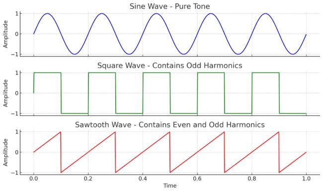
What happens if the transmission line treats different frequency components differently?
- Amplitude Distortion: If $\alpha$ varies with frequency, high-frequency harmonics get attenuated more severely than low-frequency harmonics, changing the relative proportions of the wave.
- Phase (Delay) Distortion: If phase velocity $u_p = \omega/\beta$ varies with frequency, different harmonics travel at different speeds, arriving out of synchronization. The crisp edges of digital pulses smear and disperse!
Scene 2: Meet the Lossless Transmission Line
Imagine an ideal transmission line constructed from perfect electrical conductors ($\sigma_c \to \infty$) separated by a perfect dielectric insulator ($\sigma_d = 0$): \[ \boxed{ R = 0 \qquad G = 0 } \]
Scene 3: What Happens to the Speed of Our Wave?
The phase velocity of wave propagation on the lossless line is: \[ u_p = \frac{\omega}{\beta} = \frac{\omega}{\omega\sqrt{LC}} = \boxed{ \frac{1}{\sqrt{LC}} = \frac{c}{\sqrt{\mu_r \epsilon_r}} } \]
Scene 4: But What If We Allow Some Energy Loss? The Distortionless Line
In long-distance telephony and telegraphy, metallic resistance and dielectric leakage are physically inevitable ($R > 0, G > 0$). An engineer says: "I can accept signal attenuation (we can use repeaters and amplifiers), but I cannot tolerate speech intelligibility or digital pulses becoming completely distorted!"
Oliver Heaviside proved that a lossy line can transmit signals with zero waveform distortion if it satisfies the famous condition:
Let $\frac{R}{L} = \frac{G}{C} = k$, so $R = kL$ and $G = kC$: \[ \gamma = \sqrt{(kL + j\omega L)(kC + j\omega C)} = \sqrt{LC(k + j\omega)^2} = \sqrt{LC}(k + j\omega) = k\sqrt{LC} + j\omega\sqrt{LC} \]
Scene 5: Comprehensive Comparison Matrix
| Physical Property | Lossless Transmission Line | Distortionless Transmission Line |
|---|---|---|
| Governing Condition | \(R = 0, \quad G = 0\) | \(\frac{R}{L} = \frac{G}{C} \iff RC = GL\) |
| Attenuation Constant (\(\alpha\)) | \(\alpha = 0\) | \(\alpha = \sqrt{RG}\) (Finite, frequency-independent) |
| Phase Constant (\(\beta\)) | \(\beta = \omega\sqrt{LC}\) | \(\beta = \omega\sqrt{LC}\) |
| Phase Velocity (\(u_p\)) | \(u_p = 1/\sqrt{LC}\) (Constant) | \(u_p = 1/\sqrt{LC}\) (Constant) |
| Characteristic Impedance (\(Z_0\)) | \(Z_0 = \sqrt{L/C}\) (Purely resistive) | \(Z_0 = \sqrt{L/C}\) (Purely resistive) |
| Waveform Distortion | None | None |
| Energy Loss | Zero energy dissipation | Ohmic dissipation occurs (\(P \propto e^{-2\alpha z}\)) |
The Universal Exam Truth:
"Every lossless line is distortionless, but every distortionless line is NOT lossless."
Because a lossless line satisfies $\alpha = 0$ ($R=0, G=0 \implies RC = GL = 0$), it naturally satisfies the distortionless criteria. However, a distortionless line can have non-zero resistance and conductance, experiencing real signal attenuation while preserving the wave shape!
The Load Decides the Fate of the Wave
Scene 1 & 2: Our Wave Reaches Its Destination • Why Would It Reflect?
Imagine our transmitter launches an RF wave down a $50\,\Omega$ coaxial transmission line. The wave carries electromagnetic energy forward. At the far end ($z = \ell$), it encounters an antenna: our load impedance $Z_L$.
Here is the core physical question: The incoming wave expects an environment where voltage and current maintain the precise ratio $Z_0 = V^+ / I^+$. But the load imposes its own boundary demand: $V_L / I_L = Z_L$. What happens when $Z_L \ne Z_0$?
Scene 3: Derivation of the Voltage Reflection Coefficient (\(\Gamma_L\))
We define the voltage reflection coefficient at the load terminal as the ratio of reflected voltage to incident voltage: \[ \Gamma_L = \frac{V_L^-}{V_L^+} \]
At the load terminal, total voltage and current are: \[ V_L = V_L^+ + V_L^- = V_L^+(1 + \Gamma_L) \] \[ I_L = I_L^+ + I_L^- = \frac{V_L^+}{Z_0} - \frac{V_L^-}{Z_0} = \frac{V_L^+}{Z_0}(1 - \Gamma_L) \] Taking their ratio $Z_L = V_L / I_L$: \[ Z_L = Z_0 \left( \frac{1 + \Gamma_L}{1 - \Gamma_L} \right) \implies Z_L(1 - \Gamma_L) = Z_0(1 + \Gamma_L) \] \[ Z_L - Z_0 = (Z_L + Z_0)\Gamma_L \]
Scene 4: Three Fundamental Load Encounters
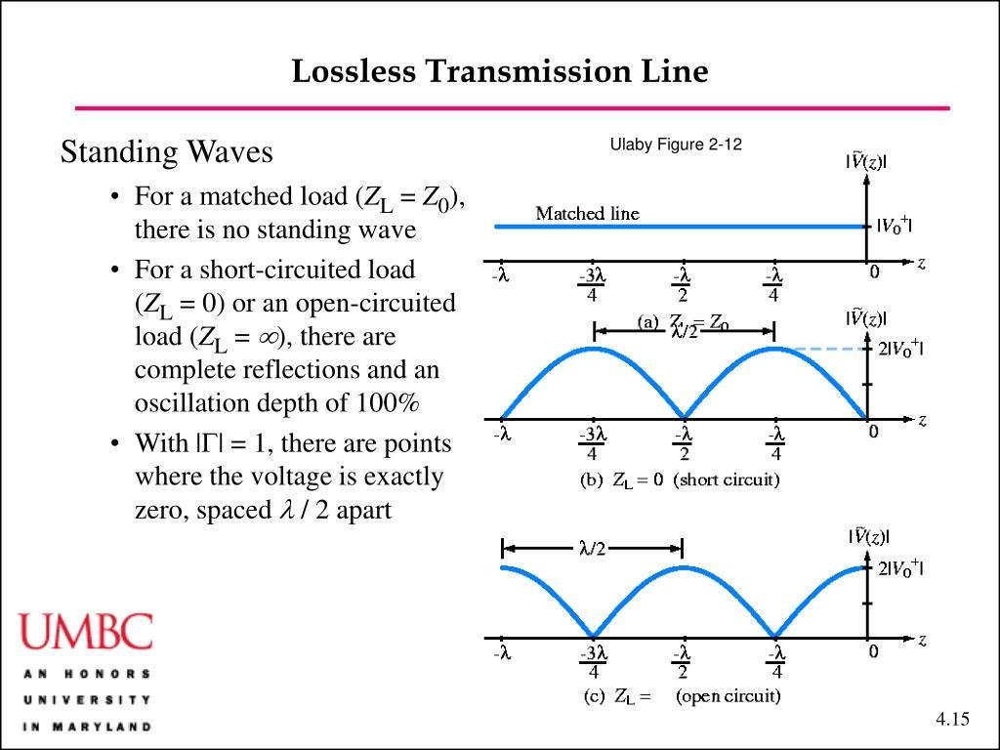
infty) has voltage maximum (antinode) at load.')">1. Matched Load (\(Z_L = Z_0\))
\[ \Gamma_L = \frac{Z_0 - Z_0}{Z_0 + Z_0} = \mathbf{0} \]
Zero reflection. $100\%$ of incident wave power is smoothly delivered into the load. The voltage envelope is completely flat along the entire line!
2. Short Circuit (\(Z_L = 0\))
\[ \Gamma_L = \frac{0 - Z_0}{0 + Z_0} = \mathbf{-1} \]
Total reflection with $180^\circ$ phase reversal. At the load terminal, incident and reflected voltages cancel identically, forming a Voltage Node ($V=0$) and a Current Antinode ($I_{\max}$).
3. Open Circuit (\(Z_L \to \infty\))
\[ \Gamma_L = \lim_{Z_L \to \infty} \frac{Z_L - Z_0}{Z_L + Z_0} = \mathbf{+1} \]
Total reflection in phase. Incident and reflected voltages add constructively at the open terminal, creating a Voltage Antinode ($2V_0^+$) and a Current Node ($I=0$).
Scene 5 & 6: Standing Waves and Voltage Standing Wave Ratio (VSWR)
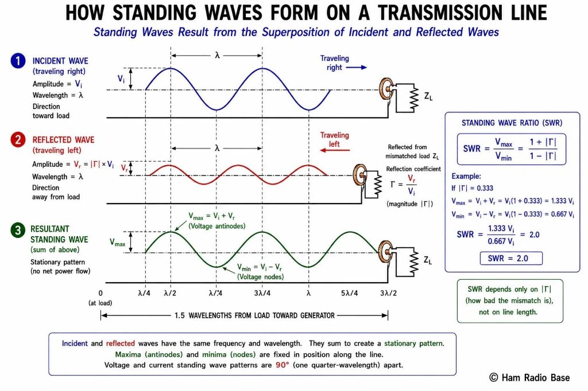
When the forward and reflected waves co-exist, they interfere. At certain spatial locations along the line, they align in phase and reinforce each other; at other locations, they are $180^\circ$ out of phase and oppose each other: \[ V_{\max} = |V_0^+| + |V_0^-| = |V_0^+|(1 + |\Gamma_L|) \] \[ V_{\min} = |V_0^+| - |V_0^-| = |V_0^+|(1 - |\Gamma_L|) \]
• Perfectly matched line: $|\Gamma_L| = 0 \implies \mathbf{s = 1.0}$ (Ideal 1:1 match).
• Practical RF systems: $s \le 1.5 \implies |\Gamma_L| \le 0.20$ (Acceptable broadcast standard).
• Short or Open circuit: $|\Gamma_L| = 1.0 \implies \mathbf{s = \infty}$ ($100\%$ standing wave, zero power delivered).
In lecture notes, VSWR is often stripped of its complex load phase context or mixed with differing sign conventions. To eliminate confusion across your files, Sadiku Chapter 11 serves as the definitive curriculum authority. Every formula, slotted-line derivation, and Smith Chart $s$-circle throughout this portal reconciles strictly with Section 11.4.
Scene 7 & 8: Impedance Extremes and Transit Time Delay
At the positions of maximum voltage (voltage antinodes), current is at a minimum, yielding maximum input impedance: \[ \boxed{ Z_{\text{in},\max} = \frac{V_{\max}}{I_{\min}} = s Z_0 } \] At the positions of minimum voltage (voltage nodes), current is at a maximum: \[ \boxed{ Z_{\text{in},\min} = \frac{V_{\min}}{I_{\max}} = \frac{Z_0}{s} } \] Multiplying both equations yields the famous Geometric Mean Property: \[ \boxed{ \sqrt{ Z_{\text{in},\max} \cdot Z_{\text{in},\min} } = Z_0 } \]
Finite Transit Time • The Electrical Length Criterion
A signal travels along the line of length $\ell$ with phase velocity $v_p$, requiring finite transit delay: $$t_{\text{transit}} = \frac{\ell}{v_p}$$ Whenever $\ell \ge \lambda/20$ (or equivalently $t_{\text{transit}} \ge T/20$), the phase shift along the line becomes significant ($\ge 18^\circ$), making distributed transmission line analysis mandatory!
The Hollow Pipe That Can Carry Electromagnetic Waves
Scene 1: Why Are We Abandoning the Cable?
As telecommunication operating frequencies rise from radio frequencies into the microwave regime ($> 3\text{ GHz}$), coaxial cables become lossy, inefficient, and prone to dielectric breakdown under high power.
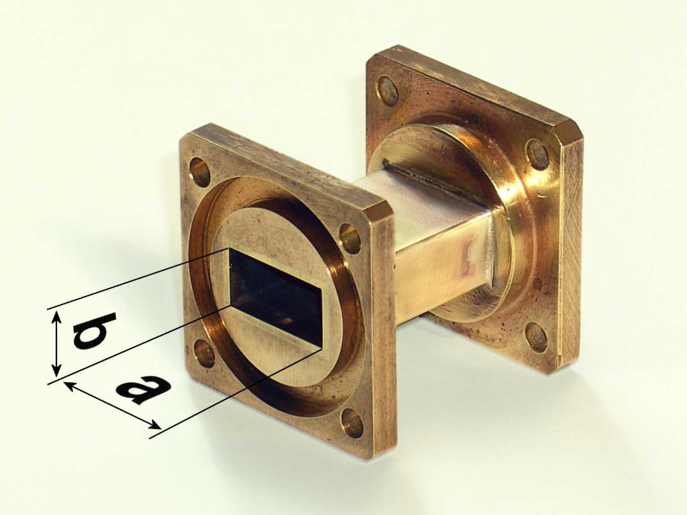
How can an electromagnetic wave travel inside a completely hollow metallic pipe without a return wire? To understand this, we must examine Waveguide Modes.
Scene 2 & 3: What Is a Mode? The Three Wave Families
The conducting metallic walls enforce boundary conditions on the Maxwell equations. A mode is a specific, mathematically permitted electromagnetic field distribution that satisfies both the wave equations and the metallic wall boundaries:
1. TEM Mode
Both electric and magnetic fields are strictly perpendicular to propagation direction. Standard mode of 2-conductor lines (coax, parallel wire).
2. TE Mode
Electric field is entirely transverse. The magnetic field has a longitudinal component along the direction of wave travel.
3. TM Mode
Magnetic field is entirely transverse. The electric field has a longitudinal component along the direction of wave travel.
Scene 4: The Great Mystery • Why Can't a Hollow Pipe Support a TEM Mode?
This is one of the most celebrated proofs in electromagnetic theory. Contrast a coaxial cable with a hollow rectangular pipe:
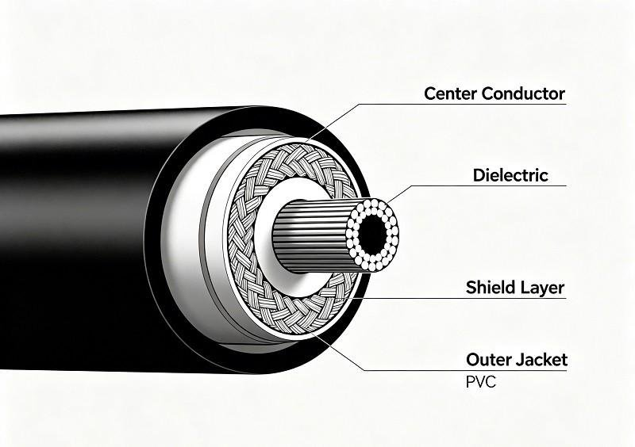
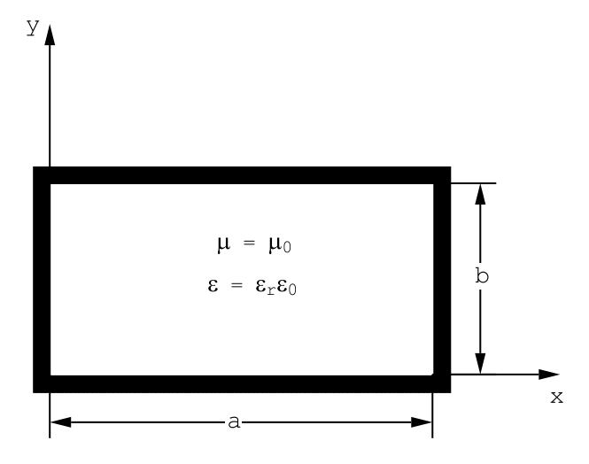
The Complete Mathematical Proof via Laplace's Equation:
1. For any hypothetical TEM mode, $E_z = 0$ and $H_z = 0$.
2. Because $\nabla \times \mathbf{E}_t = -j\omega\mu H_z \hat{\mathbf{z}} = 0$, the transverse electric field can be expressed as the gradient of a scalar potential: $\mathbf{E}_t = -\nabla_t \Phi$.
3. In the charge-free hollow interior of the guide ($\rho_v = 0$), Gauss's law gives:
\[ \nabla_t \cdot \mathbf{E}_t = 0 \implies \nabla_t^2 \Phi = 0 \quad (\text{Laplace's Equation}) \]
4. The metallic walls of the waveguide form one single, continuous, connected conducting perimeter. Because a conductor is an equipotential surface, the boundary condition is:
\[ \Phi = \text{constant everywhere on the wall} \]
5. By the Uniqueness Theorem of potential theory, a solution to Laplace's equation whose boundary is held at a constant potential must be constant throughout the entire enclosed domain:
\[ \Phi(x,y) = \text{constant everywhere inside the hollow guide} \]
6. Therefore, the electric field is:
\[ \mathbf{E}_t = -\nabla_t \Phi = \mathbf{0} \]
7. But a TEM wave by definition requires a non-zero transverse electric field!
Scene 5: So What Modes Survive? TE and TM Field Distributions
Because TEM is physically impossible, electromagnetic waves can only propagate through hollow metallic guides as TE modes ($E_z = 0, H_z \ne 0$) or TM modes ($H_z = 0, E_z \ne 0$).
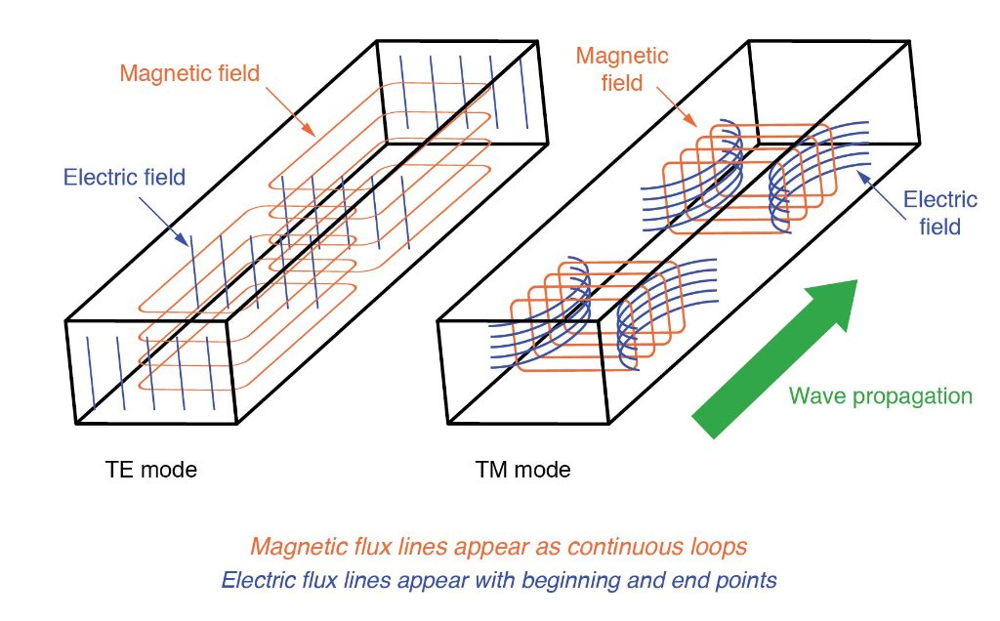
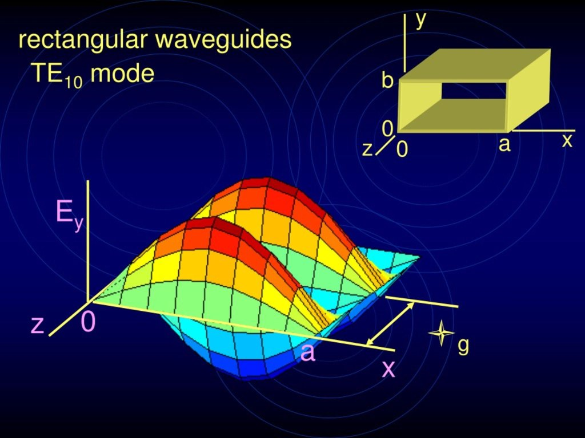
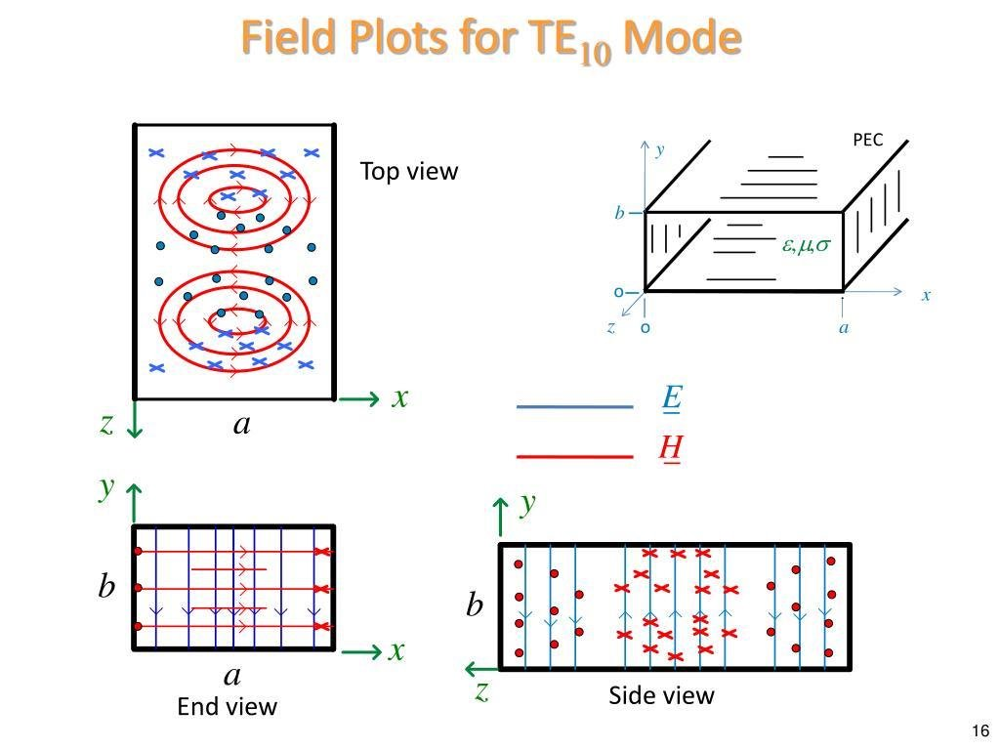
Brilliant! You've understood the central difference between a coaxial cable and a hollow metallic waveguide. The single connected conducting boundary forces the transverse potential to be constant under the TEM assumption. That means no transverse electric field can exist, contradicting what TEM requires. But TE and TM survive. And now they face another challenge.
The Waveguide Has a Gatekeeper: Cutoff Frequency & Dominant Mode
Scene 1: Imagine Sending a Wave into Our Hollow Pipe
We've built a rectangular metallic pipe. We've established that it can support TE and TM modes. Now imagine our transmitter sends a signal into it via an internal launcher probe.
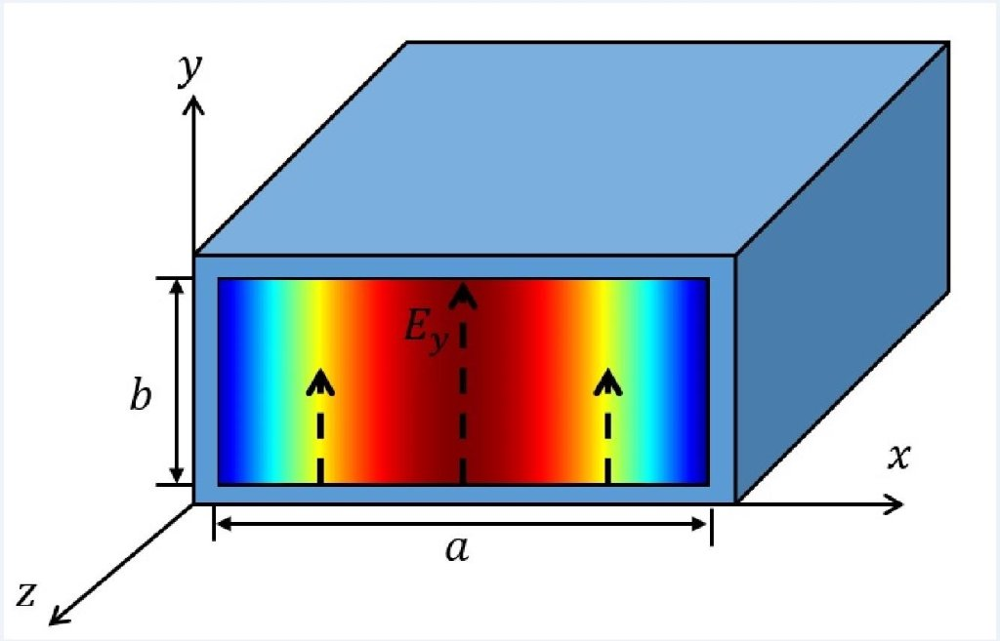
Here's the mystery: Does every frequency successfully travel through this pipe?
No. A particular mode can propagate only when the operating frequency is sufficiently high. Below a certain critical frequency, the electromagnetic field cannot maintain a travelling-wave pattern along the guide. This minimum frequency is called the cutoff frequency (\(f_c\)).
Let's discover why it exists.
Scene 2: The Walls Impose Rules on the Wave
Remember our last chapter? The conducting metallic walls impose rigid electromagnetic boundary conditions:
The tangential electric field must vanish completely at every conducting wall surface. This means the electric field pattern cannot behave arbitrarily inside the pipe.
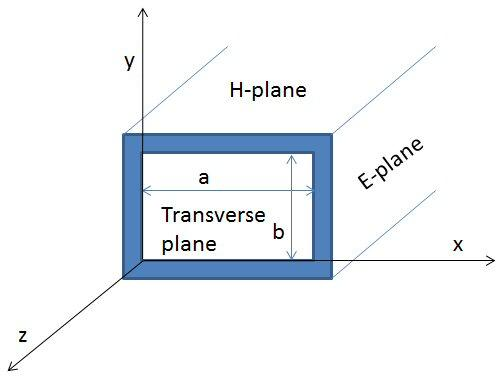
For a standard rectangular waveguide, let:
- \(a\) = broad internal dimension (along the \(x\)-axis).
- \(b\) = narrow internal dimension (along the \(y\)-axis).
- \(a > b\) = standard rectangular geometry (typically \(a = 2b\)).
The electromagnetic field must form standing spatial patterns that satisfy the wall boundaries (\(E_t = 0\) at \(x = 0, a\) and \(y = 0, b\)). Different patterns require different amounts of spatial variation across the pipe. And this is the key: A wave needs sufficient frequency to support the required field pattern and propagate along the guide.
Scene 3: Let's Give the Walls a Mathematical Voice
The field patterns are described by mode numbers \(m\) and \(n\). They represent how many half-wave (\(\lambda/2\)) sinusoidal variations occur across the two transverse dimensions.
The transverse cutoff wavenumber is:
Why do we need this quantity? Because \(k_c\) describes how much of the wave's spatial variation is "consumed" creating the required boundary field pattern across the cross-section of the waveguide.
The total wavenumber inside the filling medium is:
The fundamental Pythagorean relationship between total wavenumber \(k\), transverse cutoff wavenumber \(k_c\), and longitudinal propagation constant \(\beta\) is:
Here, \(\beta\) (Phase Constant) describes wave propagation along the length of the pipe. This equation is the master key to understanding cutoff!
Scene 4: Three Possible Fates of an Electromagnetic Wave
Depending on how operating frequency \(f\) compares with \(f_c\), the term \(\beta^2 = k^2 - k_c^2\) yields three completely different physical regimes:
\(f > f_c \implies k > k_c\)
The total wavenumber is sufficiently large. Therefore \(\beta^2 > 0\), meaning \(\beta = \sqrt{k^2 - k_c^2}\) is real and positive.
\(f = f_c \implies k = k_c\)
The longitudinal propagation constant becomes exactly zero: \(\beta = 0\). Consequently: \[ \lambda_g = \frac{2\pi}{\beta} \to \infty \]
\(f < f_c \implies k < k_c\)
Now \(k^2 - k_c^2 < 0\), so \(\beta^2 < 0\). The propagation constant \(\beta\) becomes purely imaginary (\(\beta = -j\alpha\)): \[ e^{-j\beta z} = e^{-j(-j\alpha)z} = e^{-\alpha z} \]
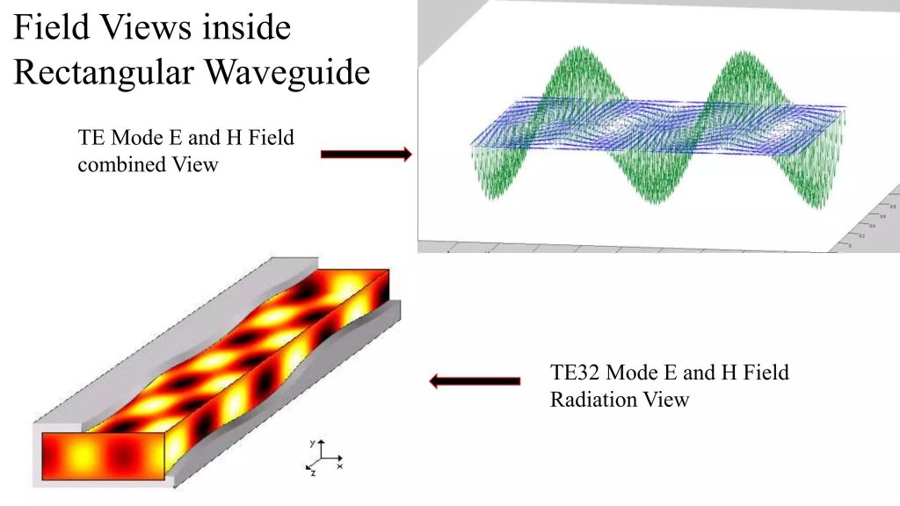
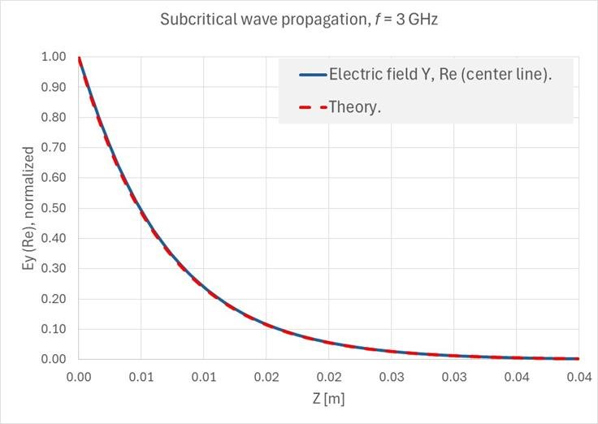
Scene 5: Deriving the Master Cutoff Frequency Formula
At the precise cutoff boundary, we set \(f = f_c\) and \(\beta = 0\):
1. Equate cutoff wavenumber to medium wavenumber at \(\beta = 0\):
\[ k^2 = k_c^2 + \beta^2 \implies k_c^2 = k^2 \]2. Substitute the geometric expression for \(k_c^2\) and medium dispersion for \(k\):
\[ k_c^2 = \left(\frac{m\pi}{a}\right)^2 + \left(\frac{n\pi}{b}\right)^2, \qquad k = \omega\sqrt{\mu\varepsilon} \] \[ \omega_c^2 \mu\varepsilon = \left(\frac{m\pi}{a}\right)^2 + \left(\frac{n\pi}{b}\right)^2 \]3. Take the square root to solve for cutoff angular frequency \(\omega_c\):
\[ \omega_c = \frac{1}{\sqrt{\mu\varepsilon}} \sqrt{\left(\frac{m\pi}{a}\right)^2 + \left(\frac{n\pi}{b}\right)^2} \]4. Express in ordinary frequency \(f_c = \frac{\omega_c}{2\pi}\) and speed of light \(c = 1/\sqrt{\mu_0\varepsilon_0}\):
\[ \boxed{ f_c = \frac{c}{2\sqrt{\mu_r\varepsilon_r}} \sqrt{\left(\frac{m}{a}\right)^2 + \left(\frac{n}{b}\right)^2} } \]Where:
- \(a, b\): Internal guide dimensions in metres.
- \(m, n\): Mode indices representing transverse half-wave variations.
- \(\mu_r, \varepsilon_r\): Relative permeability and permittivity of medium.
- \(c\): Speed of light in vacuum (\(3 \times 10^8\text{ m/s}\)).
Scene 6: Meet the Dominant Mode: \(\mathrm{TE}_{10}\)
Now your notes introduce a paramount concept: the dominant mode is defined as the mode with the lowest cutoff frequency of all possible modes.
For any rectangular waveguide where the broad dimension exceeds the narrow dimension (\(a > b\)), the dominant mode is uniquely:
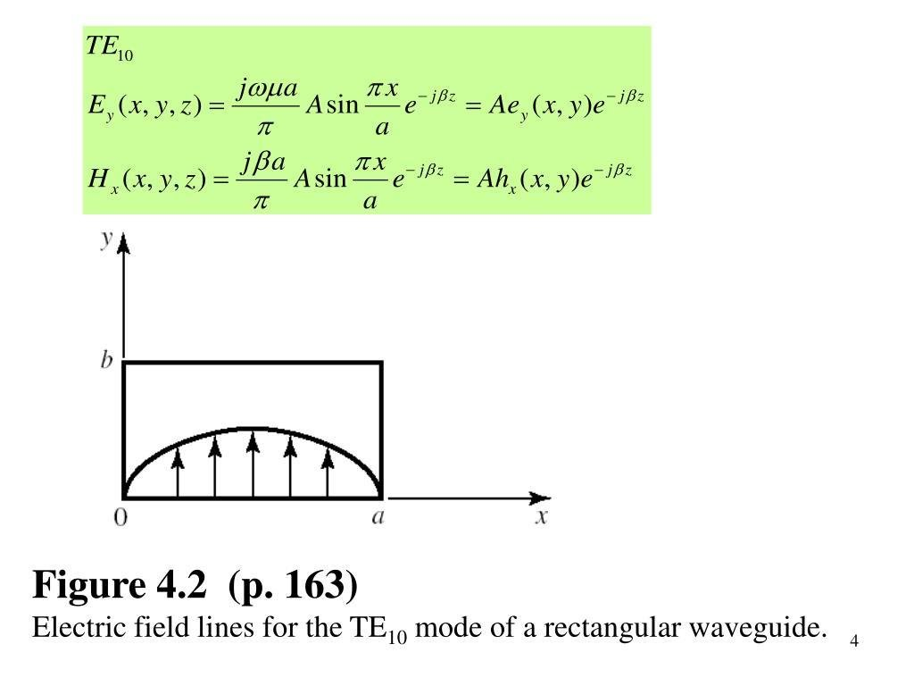
Let's decode its name:
- TE: Electric field has no longitudinal component (\(E_z = 0\)).
- \(m = 1\): Exactly one half-wave variation across the broad dimension \(a\).
- \(n = 0\): No variation across the narrow dimension \(b\).
For \(\mathrm{TE}_{10}\), substitute \(m = 1\) and \(n = 0\) into our master cutoff equation:
And the corresponding cutoff wavelength is:
Your notes also express the fundamental propagation condition as:
Excellent! You now understand why a hollow metallic pipe has a minimum frequency for propagation. But we have discovered something strange. Near cutoff, the waveguide allows propagation, yet the wave seems to travel in a very unusual way: its wavelength becomes enormous, its phase velocity can exceed the speed of light, and its energy travels slower than light speed. Welcome to the final chapter of our journey.
Guide Wavelength and Relativistic Velocities
Scene 1: A Wave is Travelling Inside Our Pipe
Imagine our \(\mathrm{TE}_{10}\) wave has successfully crossed the cutoff threshold (\(f > f_c\)). The electromagnetic fields now propagate freely down the rectangular waveguide.
But remember something crucial from our previous chapter: The metallic walls constrain the field pattern. The wave cannot simply behave as though it were travelling through an infinitely large open space.
Your notes describe this using a powerful geometric picture: The wave travels along an inclined zigzag path bouncing between opposite conducting walls rather than directly straight down the pipe. Let's use that picture to understand the mathematics!
Scene 2: Two Different Wavelengths
First, imagine removing the waveguide walls entirely. The wave travels through the unbounded surrounding medium. Its wavelength is called the free-space wavelength, denoted by \(\lambda_0\).
Now put the wave back inside the guide. We need a new spatial measurement: How far along the longitudinal length of the pipe must we travel before reaching another point with the exact same phase?
That longitudinal distance is called the guide wavelength (\(\lambda_g\)).
Here's the mystery: Why is the guide wavelength greater than the free-space wavelength? Let's derive it rather than memorise it!
Scene 3: The Walls Steal Some of the Wave's Spatial Variation
From our previous chapter, we know:
Now define:
- \(k\): Total wavenumber in the medium.
- \(k_c\): Cutoff transverse wavenumber.
- \(\beta\): Longitudinal propagation constant.
The guide wavelength is strictly governed by the longitudinal propagation constant:
And the free-space wavelength is:
Since \(\beta = \sqrt{k^2 - k_c^2}\) and \(k_c^2 > 0\), we have \(\beta < k\). Dividing \(2\pi\) by a smaller denominator produces a strictly larger quantity:
Scene 4: Deriving the Guide Wavelength Formula
Let's return to \(\beta^2 = k^2 - k_c^2\). For an air-filled guide:
Since \(\frac{\omega_c}{\omega} = \frac{f_c}{f}\), taking square root yields:
\[ \beta = \frac{\omega}{c}\sqrt{1 - \left(\frac{f_c}{f}\right)^2} \]Now substitute into \(\lambda_g = \frac{2\pi}{\beta}\) and note \(\lambda_0 = \frac{2\pi c}{\omega}\):
\[ \boxed{ \lambda_g = \frac{\lambda_0}{\sqrt{1 - \left(\frac{f_c}{f}\right)^2}} } \]What happens as we change frequency? Two extreme limits reveal the physics:
- Experiment A (Operating close to cutoff, \(f \to f_c^+\)): The term \(1 - (f_c/f)^2 \to 0^+\). The denominator vanishes, forcing \(\boxed{\lambda_g \to \infty}\). The longitudinal phase variation stretches out to infinity!
- Experiment B (Operating far above cutoff, \(f \gg f_c\)): The term \((f_c/f)^2 \to 0\). The denominator approaches \(1\), so \(\boxed{\lambda_g \to \lambda_0}\). The guide wavelength approaches ordinary free-space wavelength!
Scene 5: The Most Controversial Character: Phase Velocity
Now imagine tracking a particular sinusoidal crest of the traveling wave along the longitudinal axis of the pipe. How fast does that crest move?
We call this Phase Velocity (\(v_p\) or \(u_p\)):
Now examine the denominator! For a propagating mode, \(f > f_c\), so:
We are dividing the vacuum speed of light \(c\) by a number strictly less than one! Consequently:
Wait. What? Did we just shatter Einstein's Theory of Special Relativity? No! And the reason lies in the profound physical distinction between the movement of a geometric phase crest and the transport of physical energy.
Scene 6: How Can Something Move Faster Than Light?
Let's return to our bouncing wave picture. The true plane wave travels through the medium at speed \(c\), but at an angle \(\theta\) relative to the guide axis.
When you watch where the wavefront intersects the metallic wall, that point of intersection races down the pipe at an apparent speed of \(c / \cos\theta > c\). Think of scissors closing: the blades close at modest speed, but the intersection point between the two cutting edges can travel faster than the speed of sound or light!
Nothing physical is travelling at \(v_p\). No photon, no electron, and no communication message. Phase velocity describes only the geometric motion of an already-existing phase pattern. Now we need the velocity that actually carries real information!
Scene 7: Meet Group Velocity, the Carrier of Information
Imagine our transmitter sends a short modulated pulse or message rather than a perpetual infinite continuous sine wave.
A real signal pulse contains a group of nearby frequency components (a wave packet). The individual carrier oscillations inside the pulse move at phase velocity \(v_p\), but the overall modulating envelope moves at Group Velocity (\(v_g\) or \(u_g\)):
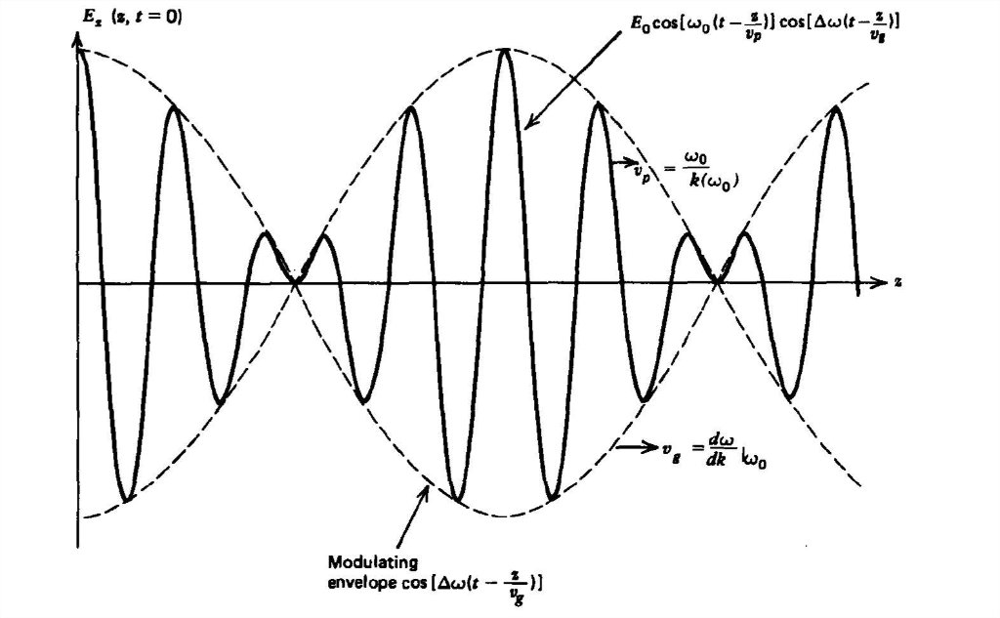
Why the derivative? Because group velocity tells us how angular frequency varies with propagation constant across the signal's spectral bandwidth. For the ideal waveguide, group velocity describes the transport of electromagnetic energy and information.
Scene 8: Deriving Group Velocity
We already know the dispersion relation:
Differentiate both sides with respect to \(\beta\) using the chain rule:
\[ 2\omega \frac{d\omega}{d\beta} = 2c^2\beta \implies \omega \frac{d\omega}{d\beta} = c^2\beta \]Therefore:
\[ v_g = \frac{d\omega}{d\beta} = \frac{c^2\beta}{\omega} \]Recall that \(\frac{\beta}{\omega} = \frac{1}{c}\sqrt{1 - \left(\frac{f_c}{f}\right)^2}\). Substitute back:
\[ \boxed{ v_g = c\sqrt{1 - \left(\frac{f_c}{f}\right)^2} } \]| Velocity Parameter | Phase Velocity (\(v_p\)) | Group Velocity (\(v_g\)) |
|---|---|---|
| Mathematical Definition | \(v_p = \omega / \beta\) | \(v_g = d\omega / d\beta\) |
| Physical Role | Tracks geometric phase crests | Tracks pulse envelope & real energy flow |
| Speed Relative to \(c\) | \(v_p > c\) (Greater than light) | \(v_g < c\) (Slower than light) |
| Information Transport | Cannot carry information alone | Carries 100% of information and power |
Scene 9: The Relationship That Connects Everything
We now have the two fundamental velocity expressions:
Now multiply them together:
The square-root factors cancel identically! And we discover the crowning jewel of waveguide electrodynamics:
Scene 10: Let's Test Our Understanding with Real Numbers
Suppose our air-filled waveguide operates at exactly twice its cutoff frequency:
First, calculate the relativistic dispersion radical:
Now calculate our three physical parameters:
Now verify our identity:
Scene 11: Grand Finale — What Happens As We Approach Cutoff?
Here is the complete behavioral spectrum of a rectangular waveguide across operating frequencies:
| Physical Parameter | Operating Just Above Cutoff (\(f \to f_c^+\)) | Operating Far Above Cutoff (\(f \gg f_c\)) |
|---|---|---|
| Guide Wavelength (\(\lambda_g\)) | \(\lambda_g \to \infty\) (Enormously stretched) | \(\lambda_g \to \lambda_0\) (Approaches free space) |
| Phase Velocity (\(v_p\)) | \(v_p \to \infty\) (Apparent phase speed infinite) | \(v_p \to c\) (Approaches speed of light) |
| Group Velocity (\(v_g\)) | \(v_g \to 0\) (Energy transport halts) | \(v_g \to c\) (Energy moves near speed of light) |
| Phase Constant (\(\beta\)) | \(\beta \to 0\) (Zero longitudinal progression) | \(\beta \to k\) (Standard propagation) |
Perfect! Near cutoff, \(\beta\) approaches zero. Consequently, \(\lambda_g\) and \(v_p\) approach infinity, while \(v_g\) approaches zero. You have mastered the entire electrodynamics journey!
🎓 Your Module 3 Journey: Where We Stand
We have systematically journeyed through the full theoretical landscape of Transmission Lines and Hollow Metallic Waveguides. Here is your curriculum mastery ledger:
| Curriculum Milestone | Status | Core Physical Concept Mastered |
|---|---|---|
| 1. Transmission-Line Foundations | Covered | Why electromagnetic field theory is needed when line length \(\ell \ge \lambda/20\). |
| 2. Distributed \(R, L, G, C\) Parameters | Covered | Physical meaning of all four distributed per-unit-length quantities. |
| 3. Telegrapher's Equations | Covered | KVL, KCL, and mathematical derivation of coupled wave PDEs. |
| 4. Travelling Waves and \(Z_0\) | Covered | Forward/backward waves and characteristic impedance \(Z_0 = \sqrt{(R+j\omega L)/(G+j\omega C)}\). |
| 5. Lossless and Distortionless Lines | Covered | Attenuation, phase distortion, and the Heaviside condition \(RC = GL\). |
| 6. Reflection, VSWR and Transit Time | Covered | Load impedance matching, standing waves, and transit delay \(t_d = \ell/v\). |
| 7. Rectangular Waveguides | Covered | TEM prohibition proof, TE/TM mode families, and cutoff frequency \(f_c\). |
| 8. Guide Wavelength and Velocities | Covered | \(\lambda_g > \lambda_0\), \(v_p > c\), \(v_g < c\), and the relativistic invariant \(v_p v_g = c^2\). |
⚡ The Genesis of Electromagnetic Waves: Maxwell's Four Equations
We've travelled through transmission lines and waveguides. Now we're going deeper. Previously, we studied how electromagnetic waves travel through physical structures. Now we're going to investigate where those waves come from, how electric and magnetic fields create one another, and how James Clerk Maxwell unified everything into four equations that govern the universe.
The Four Laws That Govern the Electromagnetic World
Scene 1: Imagine a Universe with No Equations
Imagine placing a small electric charge in empty space. Something happens around it: an electric field appears.
Now imagine moving that charge. The electric field changes. That changing electric field influences the magnetic field around it. And when a magnetic field changes, something else happens: an electric field is induced.
We have discovered a profound reality: Electricity and magnetism aren't two independent phenomena. They are two faces of a single unified entity. James Clerk Maxwell brought these relationships together into four fundamental equations: Maxwell's four equations.
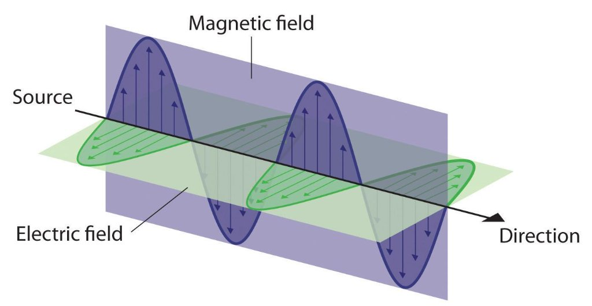
Let's meet each equation as a separate physical character.
Scene 2: Maxwell's First Law — Where Does the Electric Field Come From?
Imagine placing a positive electric charge in space. Electric field lines emerge radially outward from it. A negative charge attracts those field lines inward.
This leads to a fundamental question: What creates an electric field? Electric charge. This is described by Gauss's Law for Electricity.
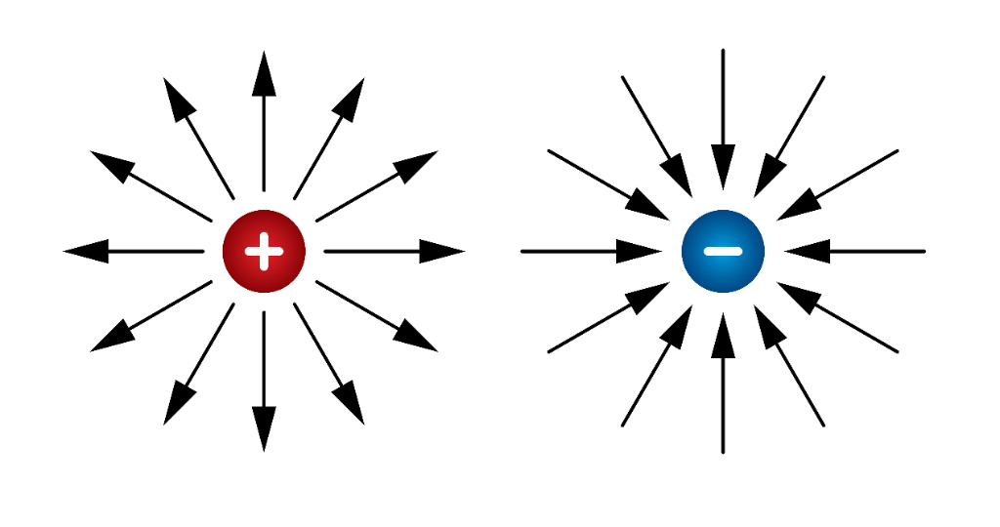
The mathematical expression in point (differential) form is:
Let's decode it:
- \(\vec{D}\): Electric flux density (\(\text{C/m}^2\)).
- \(\rho_v\): Volume charge density (\(\text{C/m}^3\)).
- \(\nabla\cdot\): The divergence operator.
Think of divergence as measuring whether a point in space behaves like a source (positive divergence) or a sink (negative divergence) of field lines. For a linear, homogeneous, isotropic medium where \(\vec{D} = \varepsilon\vec{E}\):
Scene 3: Maxwell's Second Law — Can Magnetic Field Lines Begin or End?
Now imagine placing a bar magnet in front of you. You observe a north pole and a south pole. The magnetic field lines emerge from the north pole and return to the south pole, forming continuous, unbroken closed loops.
Here's the profound physical difference: We can isolate an electric charge, but we have never observed an isolated magnetic monopole in classical physics! Magnetic field lines do not begin or end on isolated magnetic charges.
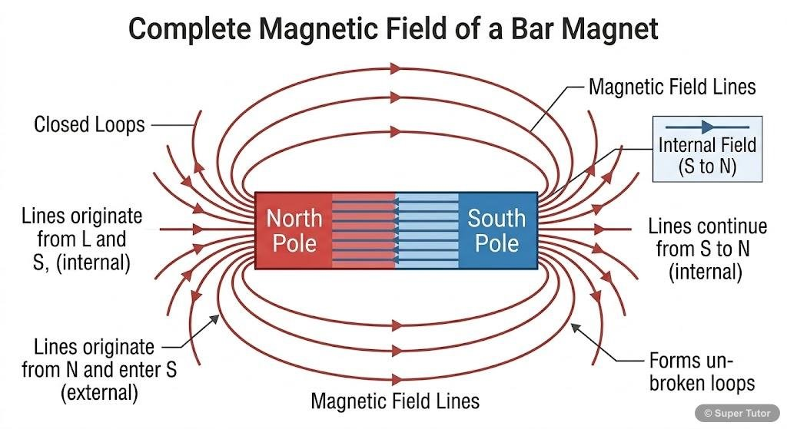
This gives us Gauss's Law for Magnetism:
Where \(\vec{B}\) is magnetic flux density (\(\text{Tesla}\)). Zero divergence means there are no net magnetic sources or sinks. For a linear homogeneous medium (\(\vec{B} = \mu\vec{H}\)):
Scene 4: Maxwell's Third Law — A Changing Magnetic Field Creates Electricity
Now things become dynamic. Imagine a copper solenoid coil. You move a permanent magnet towards it: an induced voltage appears across the terminals! Why?
Because the magnetic flux passing through the coil changes with time. A changing magnetic field induces an electric field that circulates around the changing magnetic flux. This is Faraday's Law of Electromagnetic Induction.
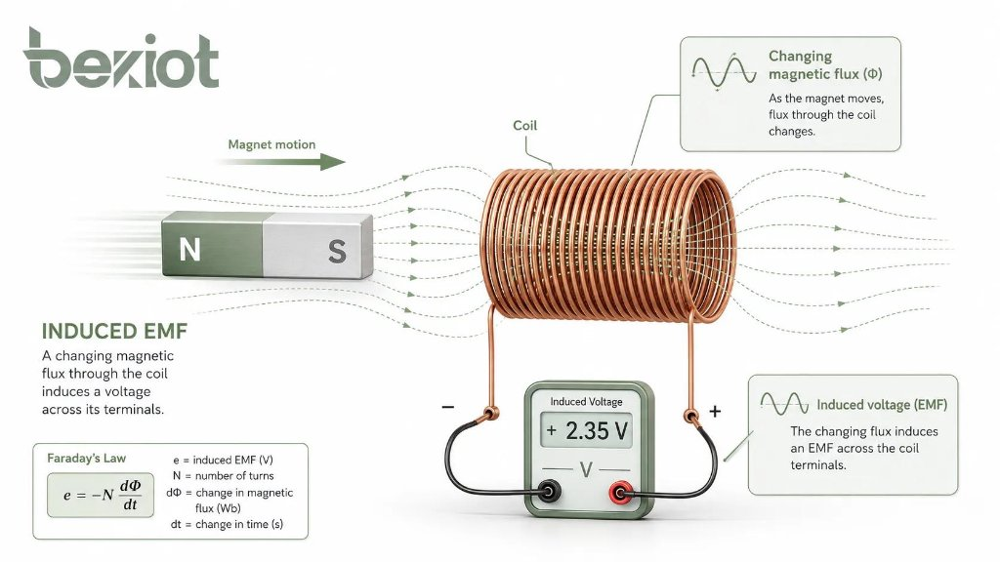
Its time-domain differential form is:
Notice the curl operator (\(\nabla\times\)). Unlike divergence, which measures outward spreading from sources, curl describes the local circulating or rotational tendency of a vector field.
Scene 5: Maxwell's Fourth Law — Changing Electricity Creates Magnetism Too
Let's imagine current flowing through a copper wire. A magnetic field forms around it. André-Marie Ampère discovered the relationship between electric current and magnetic fields.
Maxwell's Masterstroke: Maxwell recognized a fatal mathematical contradiction in Ampère's original law (\(\nabla\cdot(\nabla\times\vec{H}) = 0 \ne \nabla\cdot\vec{J}\)). Even when there is no actual conduction current passing through a dielectric or vacuum, a changing electric field produces a magnetic field. This second contribution is called displacement current density (\(\vec{J}_d\)).
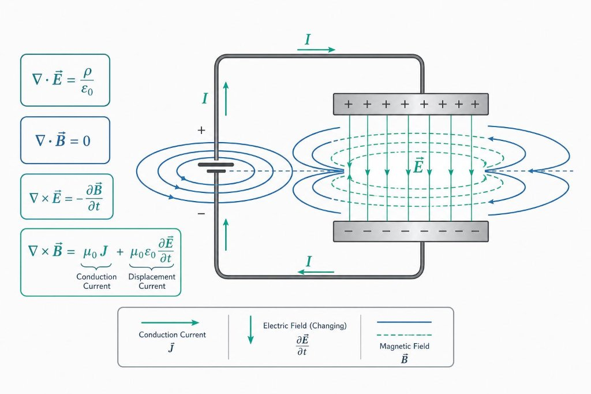
The complete Ampère-Maxwell Law is:
Where:
- \(\vec{H}\): Magnetic field intensity (\(\text{A/m}\)).
- \(\vec{J}_c = \sigma\vec{E}\): Conduction current density (\(\text{A/m}^2\)).
- \(\frac{\partial\vec{D}}{\partial t} = \varepsilon\frac{\partial\vec{E}}{\partial t}\): Displacement current density (\(\text{A/m}^2\)).
For a linear conducting medium:
Scene 6: The Four Laws Together (Time-Domain Point Form)
Look at the complete grand symphony Maxwell has given us:
| Law | Differential Equation | Physical Meaning |
|---|---|---|
| 1. Gauss's Law (Electric) | \(\nabla\cdot\vec{D} = \rho_v\) | Electric charges produce divergent electric flux lines. |
| 2. Gauss's Law (Magnetic) | \(\nabla\cdot\vec{B} = 0\) | Magnetic flux forms closed loops; no isolated magnetic monopoles. |
| 3. Faraday's Law | \(\nabla\times\vec{E} = -\frac{\partial\vec{B}}{\partial t}\) | Time-varying magnetic flux induces circulating electric fields. |
| 4. Ampère-Maxwell Law | \(\nabla\times\vec{H} = \vec{J}_c + \frac{\partial\vec{D}}{\partial t}\) | Conduction current and changing electric flux generate magnetic fields. |
Scene 7: Why Did Engineers Invent Phasors?
Imagine an electromagnetic field oscillating continuously in time: \[ E(t) = E_0\cos(\omega t + \phi) \] At every instant, the field has a different numerical value. Carrying time-dependent sines and cosines through spatial vector derivatives is mathematically exhausting!
Engineers solved this by using Euler's formula to separate the common time oscillation from the spatial behavior: \[ e^{j\omega t} = \cos(\omega t) + j\sin(\omega t) \] An arbitrary sinusoidal field is represented using a complex spatial Phasor (\(\vec{F}_s\)):
Differentiating \(e^{j\omega t}\) with respect to time yields \(j\omega e^{j\omega t}\). Therefore, for steady-state sinusoidal excitation, we make the magical substitution:
Time differentiation is converted into simple algebraic multiplication by \(j\omega\)!
Removes time \(t\) as an active independent variable, reducing PDEs from \((x,y,z,t)\) down to purely spatial \((x,y,z)\).
Replaces time derivatives \(\partial/\partial t\) with algebraic multiplier \(j\omega\), turning differential systems into linear algebraic equations.
Combines ohmic conduction current (\(\sigma\vec{E}\)) and dielectric displacement current (\(j\omega\varepsilon\vec{E}\)) into one complex permittivity \(\varepsilon_c = \varepsilon - j\frac{\sigma}{\omega}\).
By Fourier analysis, any non-sinusoidal pulse can be decomposed into sinusoidal components, solved via phasors, and recombined.
Maxwell's Equations Enter the Phasor World
Now we give these physical laws their exact mathematical transformation under sinusoidal steady-state excitation (\(\partial/\partial t \to j\omega\)).
1. Gauss's Law for Electricity
The time-domain point equation is \(\nabla\cdot\vec{D} = \rho_v\). Because it contains no time derivative, the transformation is purely notation-level:
Physical Meaning: Total outward electric flux passing through closed surface \(S\) equals the total electric charge enclosed within volume \(V\).
2. Gauss's Law for Magnetism
The time-domain point equation is \(\nabla\cdot\vec{B} = 0\). Again, there is no time derivative:
Physical Meaning: The net magnetic flux passing through any closed surface is identically zero. Every magnetic field line entering the surface must leave it.
3. Faraday's Law of Electromagnetic Induction
The time-domain point equation is \(\nabla\times\vec{E} = -\frac{\partial\vec{B}}{\partial t}\). Now our phasor substitution \(\partial/\partial t \to j\omega\) goes to work:
Physical Meaning: The circulation of electric field along closed loop \(C\) is proportional to the time rate of change (\(-j\omega\)) of total magnetic flux passing through surface \(S\).
4. The Ampère-Maxwell Law
The time-domain equation is \(\nabla\times\vec{H} = \vec{J}_c + \frac{\partial\vec{D}}{\partial t}\). Substituting \(\frac{\partial\vec{D}}{\partial t} \to j\omega\vec{D}_s\):
For a linear conducting medium (\(\vec{J}_{cs} = \sigma\vec{E}_s\), \(\vec{D}_s = \varepsilon\vec{E}_s\)):
\[ \nabla\times\vec{H}_s = \sigma\vec{E}_s + j\omega\varepsilon\vec{E}_s \implies \boxed{ \nabla\times\vec{H}_s = (\sigma + j\omega\varepsilon)\vec{E}_s } \]Physical Meaning: Total circulation of magnetic field around closed contour \(C\) equals the sum of conduction current and time-varying displacement current threading through surface \(S\).
5. Master Summary: Phasor Point & Integral Forms
| Maxwell Equation | Phasor Point Form | Phasor Integral Form |
|---|---|---|
| Gauss (Electric) | \(\nabla\cdot\vec{D}_s = \rho_{vs}\) | \(\oint_S \vec{D}_s \cdot d\vec{S} = \int_V \rho_{vs}\, dV\) |
| Gauss (Magnetic) | \(\nabla\cdot\vec{B}_s = 0\) | \(\oint_S \vec{B}_s \cdot d\vec{S} = 0\) |
| Faraday's Law | \(\nabla\times\vec{E}_s = -j\omega\vec{B}_s\) | \(\oint_C \vec{E}_s \cdot d\vec{l} = -j\omega \int_S \vec{B}_s \cdot d\vec{S}\) |
| Ampère-Maxwell | \(\nabla\times\vec{H}_s = \vec{J}_{cs} + j\omega\vec{D}_s\) | \(\oint_C \vec{H}_s \cdot d\vec{l} = \int_S (\vec{J}_{cs} + j\omega\vec{D}_s) \cdot d\vec{S}\) |
Assignment 1 • Question 2: The Propagation of TEM Plane Waves
Now that Maxwell has connected electric and magnetic fields, we will discover how they break free from conductors and propagate together as a Transverse Electromagnetic (TEM) plane wave across three distinct media: free space, lossy dielectric, and lossless dielectric!
🚀 Where Our Electromagnetic Journey Goes Next
Every equation in our curriculum must answer three foundational questions: Why was it needed? What is happening physically? What can we calculate with it?